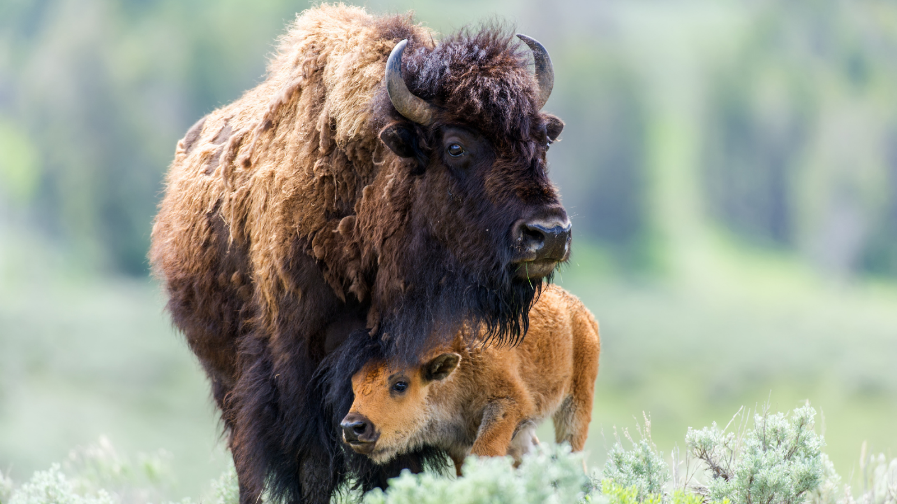
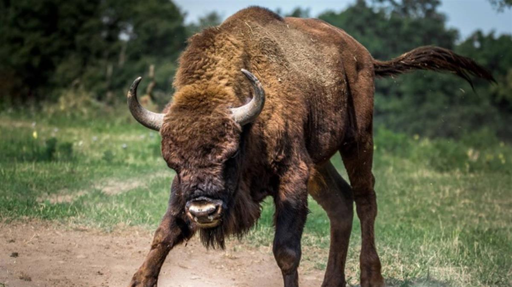
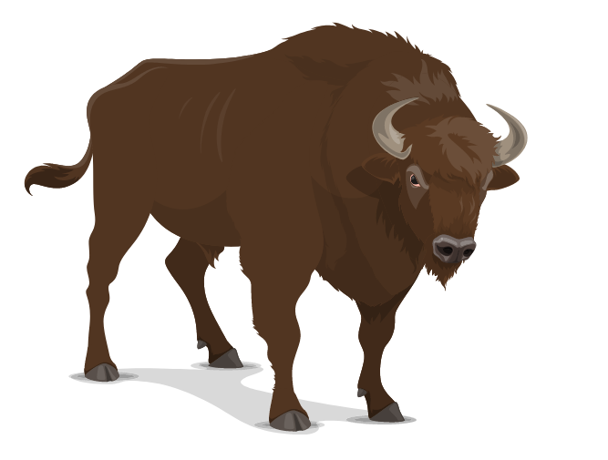

美國野牛 Bison
美國野牛

美國野牛

美國野牛
Previous
Next
性格：
美國野牛通常表現出沉穩和溫和的性格。牠們
傾向於以和平的方式生活，並在群體中展現合
作和互助的行為。美國野牛也具有強烈的保護
本能，特別是對於幼崽和群體成員的安全。雖
然牠們可能會展示出一些領域性行為，但在一
般情況下，美國野牛的性格被描述為相對溫和
和溫順。然而，當感到威脅或受到驚擾時，牠
們可能會表現出敵對或防禦行為。總的來說，
美國野牛的性格特徵體現了牠們作為堅強、和
諧動物的本質。
食物：
美國野牛主要以草食為主，牠們是草原和草地
上的嚴格素食動物。牠們主要以草、草本植物
、苔蘚和一些葉子為食，尤其偏好新鮮、嫩綠
的植物部分。美國野牛具有強大的咀嚼力和消
化系統，使其能夠有效地消化纖維素和其他植
物組織。牠們通常以大量的草料為食，每天需
要攝取大量的植物來滿足能量需求。因此，美
國野牛的食物習慣主要以草本植物為基礎，並
在適宜的草原環境中尋找充足的食物來維持其
生存和生長。
外表特徵＆外觀：
美國野牛，也被稱為美洲野牛或北美野牛，是
一種具有壯碩體型和強大外觀的大型哺乳動物
。牠們擁有厚實而肌肉發達的身軀，頭部龐大
且具有兩對強壯的角。美國野牛的體型高大而
壯觀，成年雄性可能重達900至2,000磅（約4
08至907公斤），雌性則較小一些。牠們擁有
厚重的皮膚和長而粗糙的毛髮，毛色通常呈灰
褐色至黑色，並具有鬃毛狀的頸部和前肢。美
國野牛的外表特徵和外觀給人一種強壯、堅韌
和野性的印象。

分佈＆數量：
美國野牛曾經廣泛分布在北美洲的大平原地區
，從加拿大的西部到墨西哥灣沿岸。然而，由
於人類的開發活動和狩獵壓力，美國野牛的數
量在過去大大減少。如今，牠們的分布範圍主
要集中在保護區和私人牧場中，例如美國的雅
洛草原國家公園和風洞國家草原等地。儘管現
今的數量相較過去有所回升，但美國野牛仍然
被列為瀕危物種之一，需要持續的保護和管理
來確保牠們的生存。
生活型態＆習性： 美國野牛是群居的動物，通常以大型的群體生
活，由一個成年雄性領導。牠們在廣闊的草原
地區中遷徙覓食，以尋找充足的草料和水源。
美國野牛是草食性動物，主要以草和其他植物
為食。牠們具有強健的體格和強大的咀嚼力，
可以有效地消化纖維素。在繁殖季節，雄性野
牛會進行激烈的鬥爭以爭奪配偶權利。牠們以
壯麗的角和壯觀的動作來展示自己的威勢。美
國野牛還展示出對幼崽的保護和關愛，母牛通
常會與幼崽組成緊密的家庭單位。總的來說，
美國野牛的生活型態體現了牠們作為社會性草
食性動物的特點，並適應了廣闊的草原環境。
壽命： 美國野牛的壽命通常在20至25年左右。